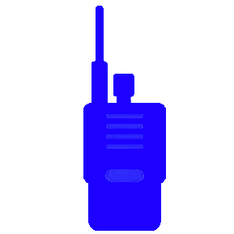
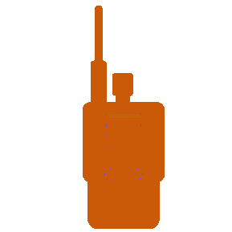
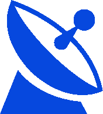

 FM. Spotted < 90 days ago
 FM. Spotted > 90 days ago
 Linear. Spotted < 90 days ago
 Linear. Spotted > 90 days ago
Linear. Spotted > 90 days ago Data sources:
DX Cluster and AAR29 Sat Log
(with permission)
 LEO Satellite Observer
by SA5IKN
LEO Satellite Observer
by SA5IKN


 Linear. Spotted > 90 days ago
Linear. Spotted > 90 days ago Data sources:
DX Cluster and AAR29 Sat Log
(with permission)